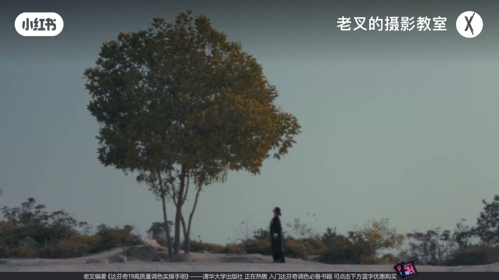
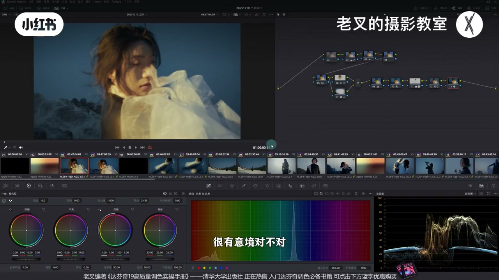
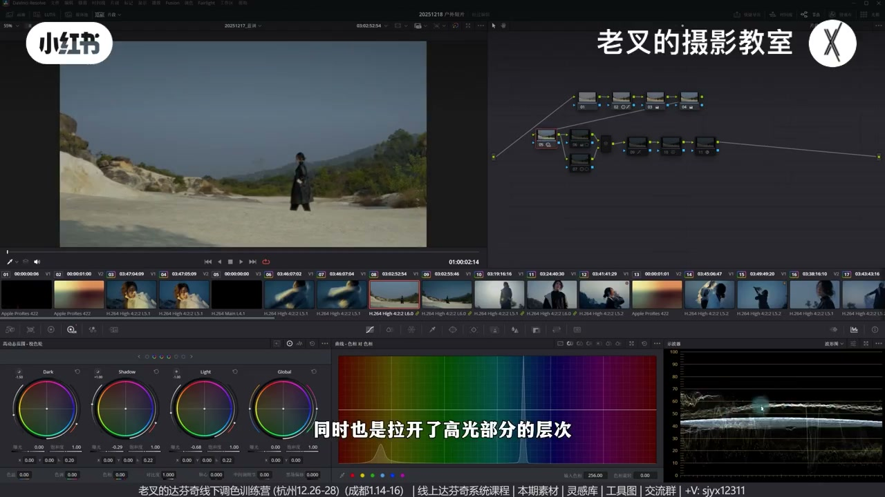
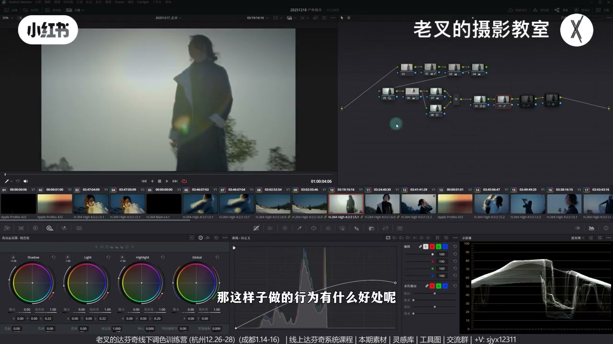
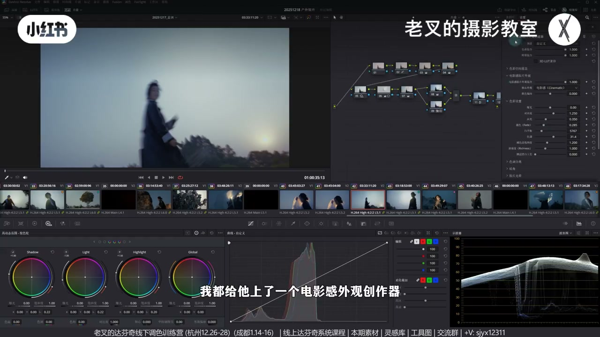

内容要点
老叉拆解下午/傍晚/晚上混剪短片：先通看，选最好看或涵盖最多情况的锚点镜头做到位，再粘贴同时段镜头并统一主要成分（如天空蓝）。跨时段无法调成同一夜景时，压暗、闷高光、对齐天空观感与高光暖度，找「小范围亮」等共同点；全片加颗粒统一噪点，比硬降噪更稳。
知识结构
先看调色/还原结果；选锚点镜头完整做到位。
粘贴同时间镜头；天空等主要成分尽量一致。
无法变夜景：压暗、闷太阳、HDR 展中灰、融合曲线压高光。
高光暖观感对齐；亮区结构接近；胶片颗粒统一噪点。
锚点→同场景粘贴→跨场景找共同点；全流程素材可领。
全片一致不是把不同时段调成同一张图，而是锚点做到位、同时段粘齐主要成分，跨时段找天空/高光暖/亮区结构等共同点，并用颗粒统一噪点质感。
00:00-02:25立题：下午傍晚晚上怎么融
朋友小梅同学的一组镜头时间混乱：下午、傍晚、晚上。素材与调色全流程会分享；作者强调思路未必最优，欢迎自调后评论区交流。
建议先通看全片，再选最好看、最重要或涵盖最多情况的镜头作锚点——本片选片头模特镜头，从灰片还原→曝光→颜色风格一步做到位。

02:25-04:07同时段粘贴：统一天空等主要成分
锚点做好后粘贴给同一时间段其他镜头。即使时间接近，还原结果也会不一致，但要把画面主要成分调同——尤其天空蓝尽量一致。夜景段调差不多后，再按剪辑顺序进下一场景。

04:07-05:26跨时段：不可能调成夜景，就压暗对齐
灰片一看就与夜景不一致，硬调成夜景不可能。还原刻意闷高光（含地面日晒区），HDR 压中灰并拉开高光层次，天空压暗再平衡地面——天空比重大，若不压成接近夜景的蓝/暗，画面会极跳跃。
更难的时段：整体还原往下压（高光可牺牲），HDR 展中灰偏暗并降，人物中心遮罩微提找回光感（略带剪影、勿提假），11 号节点用融合曲线压平高光。同场景后续就更好粘。


05:26-06:40共同点：高光暖、亮区结构、全片颗粒
天空做不成同一片蓝时，让高光暖与前后镜头/人造高光观感尽量一致，整体带一点冷即可。同拍时段两镜结果可不同，因要向下一段靠：让「中间人亮、四周暗」等结构接近。
每镜末节点上电影感外观冲激器并开胶片颗粒：夜景噪点难免，降不干净不如全片统一加噪——也是求一致。

06:40-07:34流程总结与反馈
习惯：一镜做到位→同场景同时段粘齐→下一场景；跨场景找共同点（如小范围亮光结构），再谈质感颗粒。全流程实录是否受欢迎可投票评论。
完整转录（202段）
以下文本由 Whisper medium 模型自动转录，可能存在少量识别误差，已尽可能修正。
前两天有位朋友问了这个问题
朋友巧呢小梅同学拍了这一组镜头
我们就拿来做一下简单的一个拆解
素材呢同样会免费分享给大家
我们先来看一下调色后的结果
这个是还原后的结果
其实能够看得出来
整个片子的时间点是非常混乱的
下午傍晚晚上
那么这三个时间点的内容要怎么去做融合呢
我在素材分享的文件夹里面传了这个片子调色的全流程
如果大家有需要的话可以去看一看
我在这里呢讲一下我的思路
当然啊我说的这个思路不一定是最优解的
大家如果有更好的想法
有办法可以把素材理取过去之后自己尝试一下
调出来了也可以发到评论区给大家参考参考
在调一个完整的片子的时候
我其实建议大家尽可能的通篇看一看
然后我个人的习惯呢
我会找到最好看或者是最重要
或者是涵盖最多情况的那个镜头
我选择的是这个片子的第一个镜头
模特儿很美很有意境
对不对
调它的时候不会想太多
我会把它一步一步的给它做到位
从灰片的状态做好还原
然后呢把它的曝光做好调整
再然后把颜色跟风格做好调整
其实素材是比较简单的
那还原好了之后呢
我就会把它粘贴给同一时间段的其他几个镜头
都快速的粘贴
粘贴的过程中
其实大家看那个调色全流程的时候能够发现
其实每个镜头还原后就算它们时间点很接近
它还原后的结果也非常不一致
但是呢我们一定要把画面主要成分给调的相同
也就是天空的蓝要尽可能的一致
那这些晚上的镜头呢
我们给它调的差不多了之后
我们就可以开始考虑下一个场景了
下一个场景我们可以按剪辑的顺序来
比如说我们给这个画面去粘
这个画面我们其实从灰片状态下看得出来
它并不是一个很好看很标准的一个场景
至少它和我们的晚上一定是不一致的
那你说我把它调成夜景可不可能呢
不可能
所以我们可以看一下
这是还原后的画面
我有刻意的把高光给做的闷一点
特别是地面上这个太阳照到的部分
给它做闷一点
我还利用HDR四轮
把它整个中灰部分的内容都往下降
同时也是拉开了高光部分的层次
再然后呢我会刻意的把天空给压暗
然后地面呢把它的曝光重新平衡一下
再然后这个点就非常重要了
我们已经把天空压暗了
所以我们就可以更好地把这个画面的天空
跟前面这些夜景画面的天空给它调成一致
因为这个画面它的天空比重实在太大了
如果这里的天空是白色或者是那种淡蓝色
那你这个画面就非常非常跳跃
这个时间段其实还好做一点
但是来到了这个时间段就不好做了
我们看到这是原片的效果
你怎么调都调不成前面这些
其他时间点的这种效果
那我们该怎么考虑呢
首先压暗是一定的
你不能说我一个片子大部分都是夜景的
暗掉的然后突然来一个特别亮的
这肯定是不行的对不对
所以我就整体的还原的时候尽可能往下压
高光会受到牺牲不管它
我在5号节点给它用HDR色轮
拉开了中灰部分的层次
同时把中灰偏暗部分往下降
然后我给中间人物的位置画了一个遮罩
把它稍微提亮一点点
提亮完了之后呢
其实我在后面这些颜色我先不说
重点在于11号节点
我们看到我在11号节点用了一个这样的融合曲线
把高光这里尽可能再给它压平
那这样做的行为有什么好处呢
首先第一个整体是走暗掉的
这个是当然的
但是我们在6号节点把人物这里稍微提亮了一点
其实是给画面中的主要成分
给它找回光感
所以前面给人物稍微提亮这个行为
就变得特别重要
可是你不能提的太多
太多又很假
我们这个想做的那个效果
其实是带上那么一点点剪影的感觉
我们要客观说
这个画面想调整前面这种效果是绝对不可能的
这是个大前提
但是我们不能让画面中这些特别突兀的内容
过于抢戏
也就是这个太阳
那这样调完了之后你会发现
后面几个同场景的镜头去粘就变得好粘了
对吧
都是一样的一个质感
同时我们要考虑一个点
我们当然知道
在这个原始状态下它是偏暖的
但是我们一定要把它调冷
为什么呀
我们已经明确天空做不成前面这种蓝了
对吧
既然做不到
我们就要考虑一个点
让这个画面它的高光的暖
和前面这个镜头的高光
以及一开始人造的这个高光
它的暖从观感上来讲尽可能一致
然后呢
整体的颜色
让画面中带上一定的冷调就行了
不需要做成一模一样的蓝
而且你也做不出来
但也有例外
比如说我们看到这两个场景
这个镜头和前面刚刚看的这个镜头
其实是同一个时间段拍的
对不对
但是我们调出来的结果是不一样的
为什么呀
因为这个镜头后面跟了一个这个
我们要让这两个镜头尽可能接近
那该怎么做呢
我们要让每个画面
它的特点尽可能接近
这个镜头一定是好调也是好看的
它有什么特点
人物在中间位置特别亮对不对
其他地方调的比较暗
那么我们就要让前面这个镜头
也符合这样的一个特点
大家可以看到我这些画面
每个画面的最后一个节点
我都给它上了一个电影港外观冲测器
并且我在胶片颗粒中
打开了这个选项
那这个做的目的是为了什么呢
我们都知道夜景调色
大概率会出现噪点
但是降噪你不能做得很干净
那既然做不干净
我还不如全片都加噪点
对吧
这同样是寻求一致的操作
那我们大概总结下思路
你想要做的全片一致
我个人的习惯是
把一个画面先做到位
然后去把同场景
同时段的镜头都粘贴一致
然后再去找下个场景
而不同场景
或者是不同时间点之间的镜头
去做匹配的话
一定要去找共同点
你不可能把两个
完全不一样的镜头调成一样的
但是我们可以考虑让画面中
比如说刚刚这两个镜头
这两个镜头调成一样不可能
但是我们可以考虑
把画面中亮的部分
尽可能一样对不对
都是一个小范围的亮光
那就可以让你的画面不会特别跳
再然后就是考虑画面的质感了
比如说胶片颗粒和噪点
大家可以把素材领取过去之后
感受下还是挺难的
我说实话
还有达芬吉的线上系统课程
和线下调色训练
您看视频下方来找我就行了
调色全流程也放在了
分享的文件夹
不知道大家对这种
真实全流程的实录感不感兴趣
还是说你更喜欢
之前那种单一镜头的操作分享呢
可以投个票
或者是评论区说一说
那讲到这里
如果绝对你有帮助的话
还希望多多三连
好了这期就到这里
886